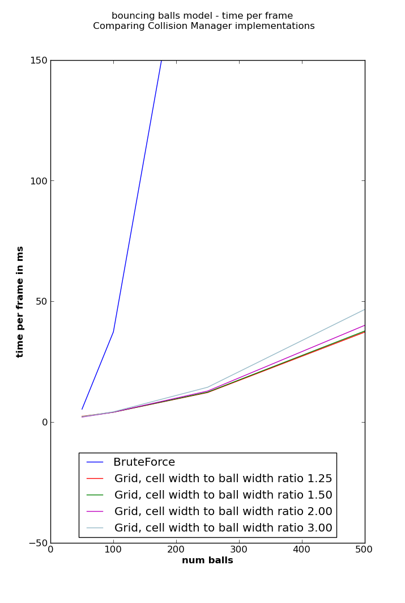
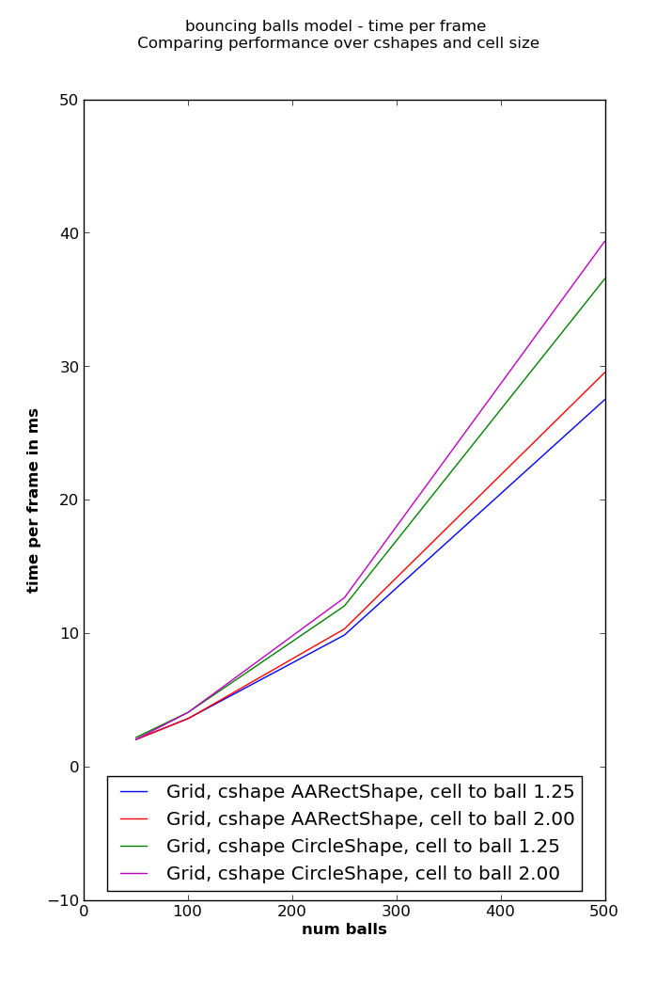

Collision¶
Collision Model¶
Use cases¶
It is common to ask about one or another spatial relation between actors, by example
- any enemy is touching player ?
- is player near to certain enemy or trigger ?
- which enemy is nearest the player ?
- any actor under the mouse cursor ?
The collision_model module has functionality to address these questions, lets see how it works.
Simplified shapes¶
Actors generally have an irregular shape, thus to answer ‘actor A is touching actor B ?’ ideally the rendered pixels for both actors should be considered. That would be too slow, so each actor specifies a simple geometrical shape to be used for collision calculations, and the question is translated to ‘shape for actor A overlaps shape for actor B ?’
The available shapes at the moment are circles (discs) and rectangles with sides parallel to the axis x=0 and y=0.
What an object must comply to be collidable ?¶
- must have a member .cshape
- the .cshape value is an instance of
CircleShapeorAARectShape
Examples:
import cocos.euclid as eu
import cocos.collision_model as cm
class CollidableSprite(cocos.sprite.Sprite):
def __init__(self, image, center_x, center_y, radius):
super(ActorSprite, self).__init__(image)
self.position = (center_x, center_y)
self.cshape = cm.CircleShape(eu.Vector2(center_x, center_y), radius)
class ActorModel(object):
def __init__(self, cx, cy, radius):
self.cshape = cm.CircleShape(eu.Vector2(center_x, center_y), radius)
The role of collision manager¶
Questions like ‘which actors are near actor A ?’ implicitly assumes a set of candidates to try is known. Thats when a CollisionManager instance kicks in: it holds a record of which collidables consider as candidates for proximity or collision. Being the entity that knows the candidates, it is the one to answer questions about spatial relations between a collidable and the known collidables.
To mantain the set of know candidates you have the methods
- add(obj) : makes obj a collidable known to the CollisionManager instance
- remove_tricky(obj) : makes the collisionManager instance forget about obj; to perform correctly obj.cshape must have the same value as when .add(obj) was called
- clear() : the CollisionManager instance will forget all known objects
For testing and debug purposes the methods ´knows(obj)´ and ´known_objs()´ are available.
Correct answers requires that the known objects have the same cshape value at the asking time than at the ‘add’ time. To satisfy that restriction there are two common strategies
do collision_manager.remove_tricky(obj); obj.update_cshape(); collision_manager.add(obj) whenever obj need to update his cshape value. This is relatively slow, but acceptable if few collidables need to update his cshape at each frame.
at each frame do:
collision_manager.clear() update cshape for all collidables add all collidables to collision_manager do the game logic related to actor collisionThis pattern is adequate when most of actors change cshape at each frame.
Sometimes it can be worth to use two collision manager instances: one for actors that rarely change it’s cshape (rocks, food,...) and other entities that update cshape at each frame (player, monsters,...)
Limitations and weaknesees¶
This is probably the simplest schema to deal with collisions and proximity. The code and API are simple and easy to modify. The drawbacks are well known
- collisions for too fast or too tiny objects can go undetected
- ill suited to do realistic bounces
More details¶
Look at CollisionManager and Cshape for details; for __init__parameters look at the respective implementation.
Performance numbers¶
The benchmark¶
The benchmark moves a number of balls in a rectangular area, with soft bounce in the ball-ball and ball-border interactions. We measure the time to calculate a fixed number of frames without drawing; this gives the time per physic frame. The initial positions are randomly chosen in the rectangle, and the initial velocity has random uniform angle. Most of the time the balls will have a uniform distribution over the rectangle.
The model for the world is coded in benchmarks/collision/a0_bouncing_balls_Model.py, and the runner in benchmarks/collision/a0_benchmark_time_per_frame.py
Directly running the model script renders on screen and shows the fps.
Testbed: windows xp sp3 32 bits, python 2.6.5, AMD athlon dual core 5200+, memory DDR2 800 single channel
Comparing with brute force¶
A benchmark was writen to compare brute force versus other implementations. Currently the only CollisionManager implementation is CollisionManagerGrid, which has parameters defining the cell size; the figure compares time per frame for brute force and CollisionManagerGrid with diferent cell sizes.
{kind=link}
Shape comparisson¶
The benchmark is parametrizable in the Cshape implementation to use; here we compare circle vs AABB
{kind=link}
Ballpark fps¶
The visualization provided by a0_bouncing_balls_Model.py, which shows all balls and a colored rectangle runs at 60 fps with 165 balls, and 30fps with 300 balls (gpu ati radeon 4650)